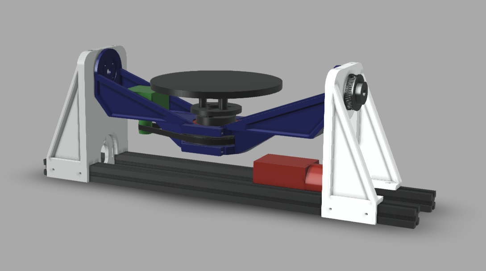
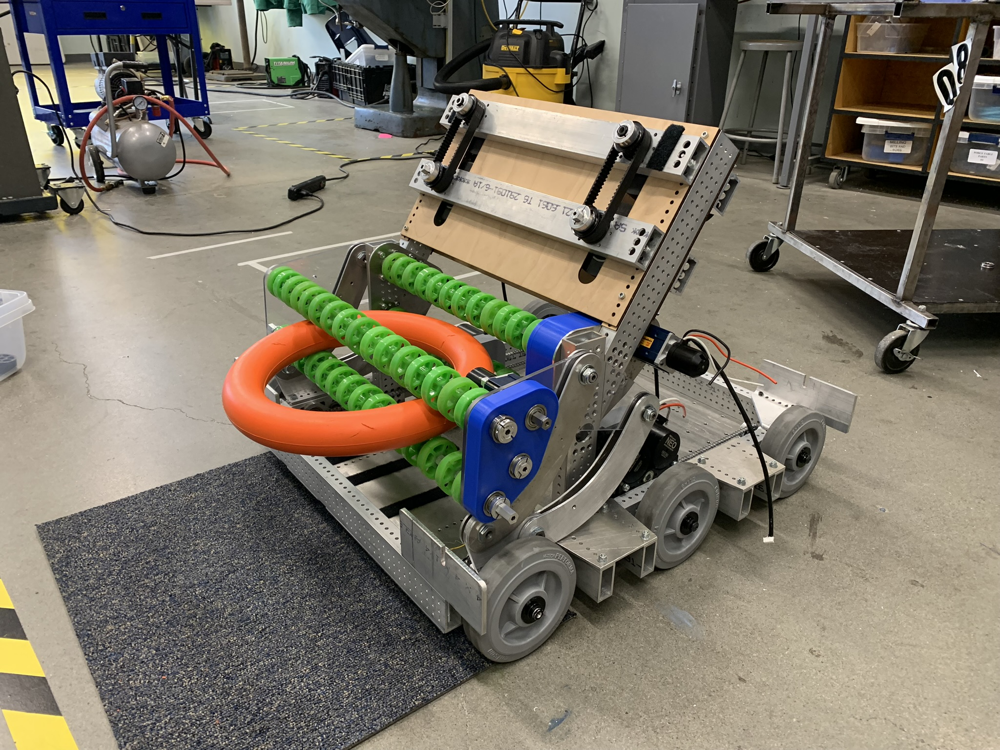

Our Mission
We connect Oregon State engineering students with local businesses, startups, researchers, and community organizations through real engineering consulting projects.
Students gain valuable hands-on engineering experience while clients receive innovative design solutions at no cost.
Our Services
Our team can assist with:
- Product Design
- CAD Modeling
- Finite Element Analysis (FEA)
- 3D Printing & Rapid Prototyping
- Engineering Drawings
- Design for Manufacturing
- Mechanical Assemblies
- Prototype Testing
- Custom Engineering Solutions
Our Portfolio
5-Axis 3D Printing Project
Working with the Design Engineering Lab at OSU our students designed a kit for a Voron 2.4 3D printer that enables 5-axis 3D printing. This project aimed to provide a cost-effective solution for 5-axis 3D printing and used skills like CAD modeling, 3D printing, design for manufacturing, static simulation testing, and shape optimization in Fusion 360.

FRC Robot
This project involved designing and building a robot for the FIRST Robotics Competition, focusing on mechanical design, programming, and team collaboration.

5-Axis 3D Printing
5-Axis 3D Printing is a cutting-edge technology that allows for the creation of complex geometries that are not possible with traditional 3D printing methods.
Join the Club
Interested in gaining real engineering experience while working with local companies and researchers?
Become a Client
Have an engineering challenge? We'd love to help. Our student teams provide engineering consulting services free of charge.